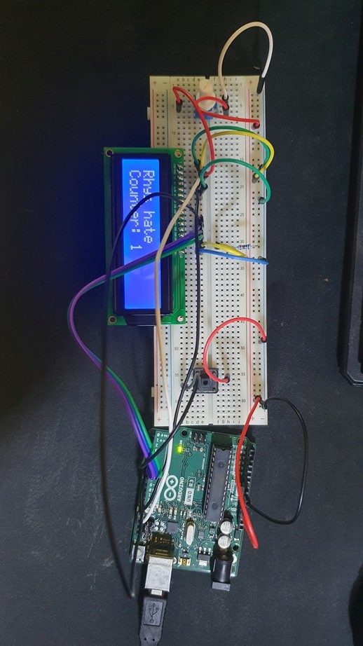

This entry covers the first two weeks of this course. Within these two weeks, we first covered the
structure of this class, which mainly consisted of creating a project that we would be working on and
later presenting on it. After a brief of the class overview, we were instructed to brainstorm our
project.
link to robotics project document: link

Arduino
// include the library code:
#include
// initialize the library by associating any needed LCD interface pin
// with the arduino pin number it is connected to
const int rs = 12, en = 11, d4 = 5, d5 = 4, d6 = 3, d7 = 2;
LiquidCrystal lcd(rs, en, d4, d5, d6, d7);
int buttonPin = 1; // the pin that the pushbutton is attached to
int counter = 0; // initialize a counter
void setup() {
// set up the LCD's number of columns and rows:
lcd.begin(16, 2);
lcd.setCursor(0, 0);
lcd.print("Rhys hate"); // Print a message to the LCD.
pinMode(buttonPin, INPUT_PULLUP); // initialize the pushbutton pin as an input
}
void loop() {
if (digitalRead(buttonPin) == LOW) { // check if the button is pressed
counter++; // increment the counter
lcd.setCursor(0, 1); // move to the second row
lcd.print("Counter: ");
lcd.print(counter); // display the counter value
delay(200); // debounce delay
}
}
I had some ideas floating around, but I eventually settled on creating a plane and a controller that two
Arduinos would control. As it is quite a challenging task, I have decided to tackle it with one of my
peers to divide the workload. We agreed that I would create the controller and my partner would work on
the plane.
I started watching videos on similar projects to help me better understand how I would approach the task
of making the controller and the components I would need. On a basic level, all I need is two joysticks,
a transmitter module and an Arduino; with this, I can control the throttle and the steering, but later
on, I can also add an LCD and a potentiometer so I can change the channel code easily and having it
shown on the LCD this will also hopefully allow finding signals for other RC vehicles also adding a
switch as an arm switch could also be a good idea so the plane does not turn on accidentally and if in a
emergency it needs to turn off.
As I wanted to implement an LCD into my project and had never played with one before, I tried to figure
out how it works. The best way to do this is to do a tiny project that involves an LCD. The project I
decided to do for this is a counter that the number goes up when a button is pressed.